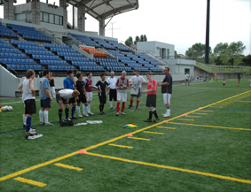

|
OiFuto Dai Ni, Wed 16th August. There were rousing cheers and audible sighs of relief from the 17-candidates upon hearing that they had all qualified for the 1st4sport Level 1 Certificate in Coaching Football, following their final practical assessments held at the Oi Chou Rinkai Koen sports complex in central Tokyo this month. The 13 candidates who participated in the Level 2 course held two weeks earlier at the Yokohama Country & Athletic Club, will be hoping for similar news come their final assessments next spring.
“The candidates were well above average to be fair,” says FA Coach Educator Stephen Lister during a course debrief. “And it was nice to have such a mixed bunch on the course. Aside from English candidates living in Japan, there were Americans, a Romanian, a candidate from Finland, as well as Scottish, Welsh and of course Japanese candidates,” he says.
Japan is a hotbed of football aficionados and if the game’s popularity continues to increase at such a rate it won’t be long before football overtakes baseball as the country’s national sport. However for the scores of international football enthusiasts working or studying in the Land of the Rising Sun, looking to pursue a hobby or etch out a career in coaching football in Japan, gaining the requisite qualifications, until recently had been something of an arduous task.
“ 2-years before enrolling on this course I had thought about going abroad to take a residential coaching course, but time and money were prohibitive factors,” remembers Mike “Mickey” Yeomans, an English teacher in Japan and candidate on both the Level 1 and Level 2 course. “When I heard The FA were making the courses available in Japan I was absolutely thrilled and having now passed my Level 1 and working towards getting my Level 2 I’m indebted to The FA whose courses far exceeded my expectations,” he says. 2-years before enrolling on this course I had thought about going abroad to take a residential coaching course, but time and money were prohibitive factors,” remembers Mike “Mickey” Yeomans, an English teacher in Japan and candidate on both the Level 1 and Level 2 course. “When I heard The FA were making the courses available in Japan I was absolutely thrilled and having now passed my Level 1 and working towards getting my Level 2 I’m indebted to The FA whose courses far exceeded my expectations,” he says.
A football resource company operating in Japan called Footy Japan Ltd mediated the two FA courses in Japan. The company run the British Football Academy in Tokyo, a series of progressive football schools for children aged 3 to 15, and have a vested interest in the continued development of high quality FA qualified coaches in Japan.
“The FA sanctioning these courses to run in Japan was fantastic news for us,” says Sid Lloyd, Managing Director of Footy Japan Ltd. “It means that the bar will be raised on coaching standards and practices in Japan and hopefully the British Football Academy will become a benchmark for local Japanese as well as other international football schools operating in Japan. We’re so grateful to all the FA personnel at Soho Square, the Sheffield & Hallamshire CFA and Stephen Lister himself for working so hard to make this happen and seeing it through to such positive fruition,” he says.
Spreading the message of the English game of football, in Japan, was one motivating factor underpinning Stephen Lister’s tireless endeavours in Japan.
“The rules and regulations of the game are the same the world over. In football there’s one ball and two goals – essentially we all play the same game, but for me it was great to see the differences in the candidates’ approach to coaching football. Take one of my Level 2 candidates for example, Florin Cumpata from Romania, he had a unique take on the game a put a great deal of emphasis on its technical aspects, at no point did I say to him that his approach was wrong and the English way right – infact I think we both learnt a lot from each other. The candidates were very receptive to new ideas and this shows their open-mindedness, by the third day of the (Level 2) course they’d all come around to my way of thinking,” quips Stephen Lister, himself a holder of the UEFA ‘A’ Advanced Licence and one of The FA’s Lead Tutors.
“On behalf of the English Football Association I’d like to thank Footy Japan Ltd. for choosing The FA to be coach education providers and facilitators,” continues Stephen Lister. “And we wish Footy Japan all the success they deserve in the future. Big Brother will be watching.”
Report – Jon Day
|